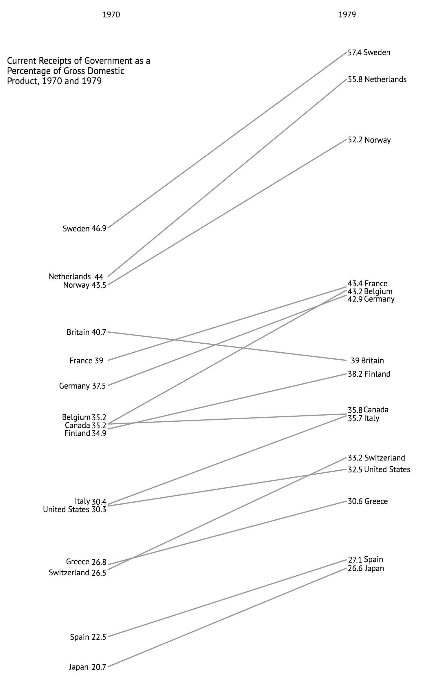
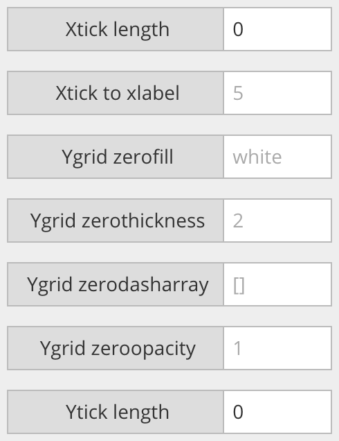
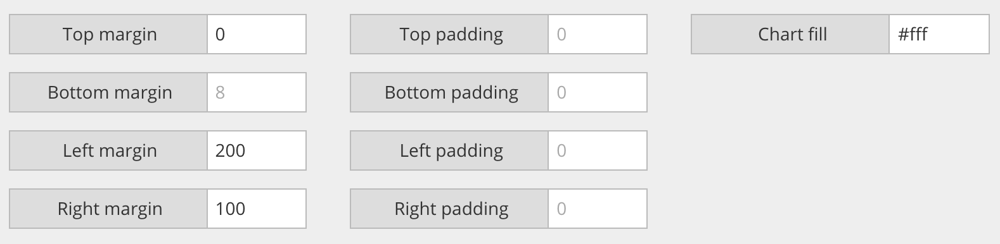
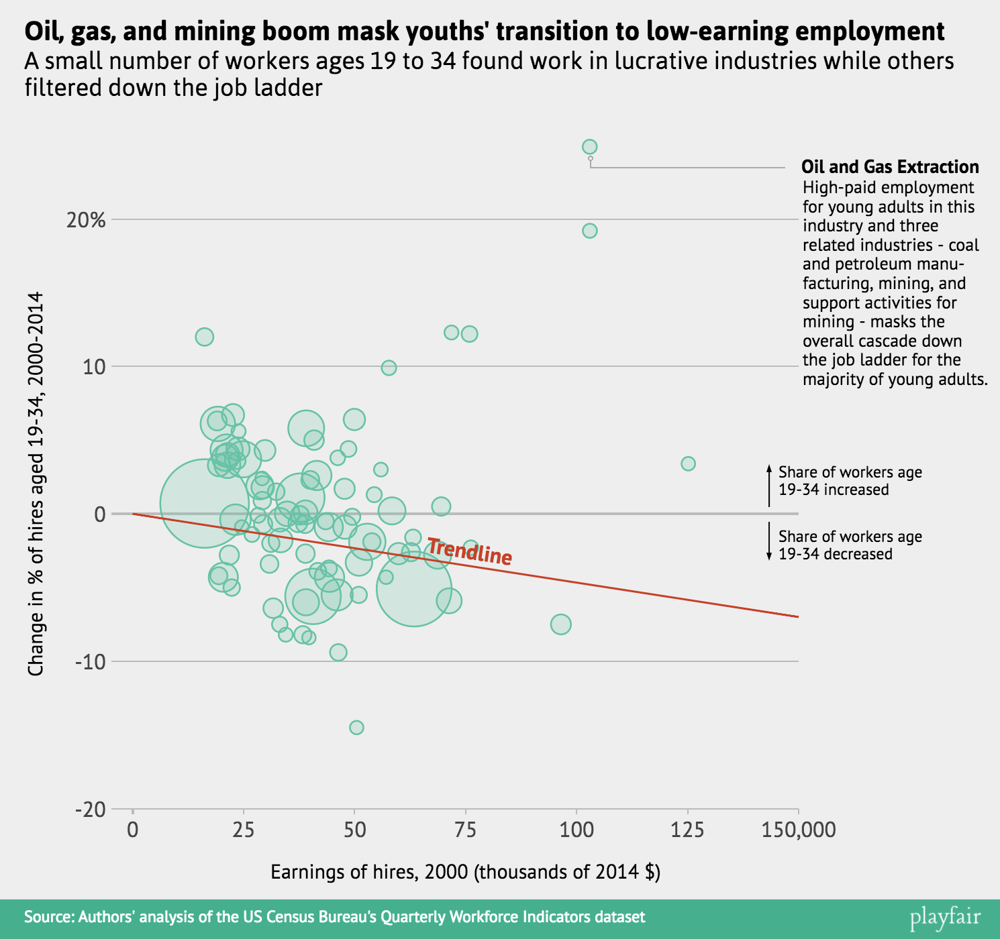
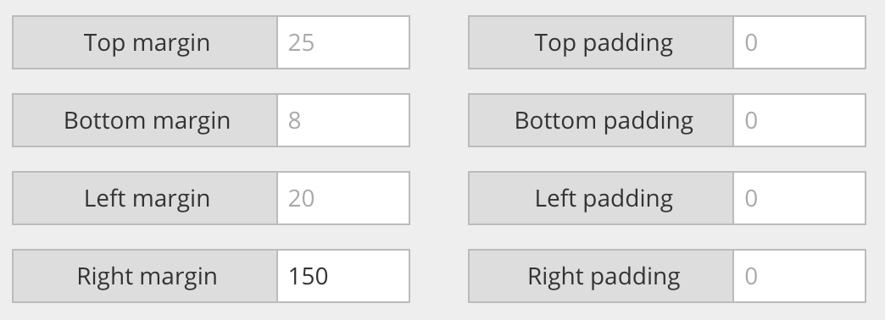
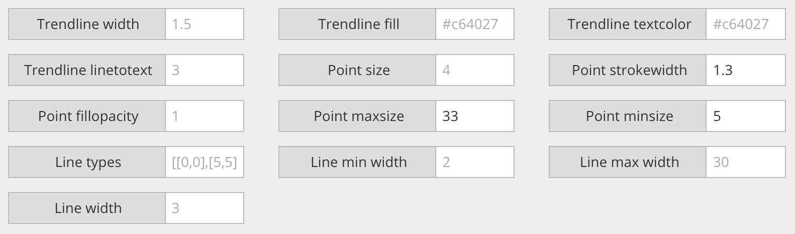

Very important disclaimer: Playfair is currently only compatible with Chrome.
Again, the hosted version of Playfair is available here: austinclemens.com/Playfair/playfair.html
If you really want to extend what you can do with Playfair, you can use the Settings tab to adjust the layout and look of your graph. You can really stretch Playfair's limits and do some unusual things here. The graph below, which mimics a graph from Edward Tufte's The Visual Display of Quantitative Information, was created using a number of custom settings.
For example, Playfair has no built in function for removing ticks and tick labels, but you can adjust these parameters in the Grids subtab as shown below:
Some adjustment is also needed to give the graph a large gutter on both the left and right side for text. These parameters can be adjusted in the Graph Area subtab. The background color the chart can be edited here too. I've adjusted it to white here (using the hex color code).
Here's another graph that was created with extensive use of the Settings tab:
As with the previous graph, I gave this one a large right margin to accomodate the lengthy annotation I wanted to add. I also adjusted the settings for the point data element to have a thinner border and a larger maximum size, as shown in the screenshot:
 